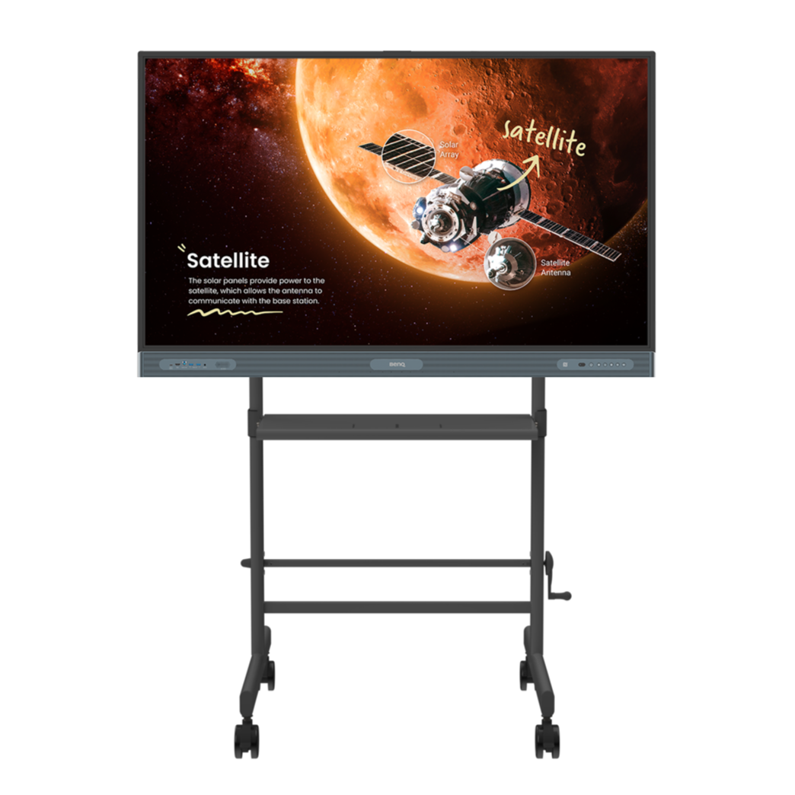
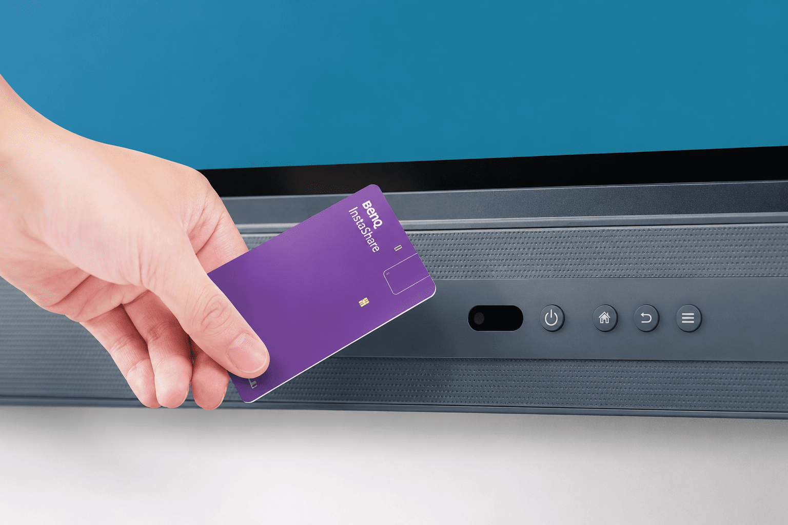

Android 15・メモリ16GB・ストレージ256GBの高い基本性能。複数教材の同時表示やアプリの切り替えも快適で、動作待ちが授業の妨げになりません。
Kokuban BASE 取り扱いブランド

ベンキュー ジャパン株式会社｜BenQ Board
インターナショナルスクールで選ばれる、授業活用重視のブランド。
国内インターナショナルスクールシェアNo.1の実績を持つブランドです。教材提示、板書、グループワーク、発表など、授業内で電子黒板を積極的に使いたい学校や塾に向いています。画面の見やすさだけでなく、教室内のコミュニケーションを広げる機能も検討しやすく、英語教育や探究学習、ICT活用型の授業づくりを進めたい現場にも提案しやすい製品です。
65型75型86型

- インター校シェアNo.1国内インターナショナルスクール
- NPU搭載AI処理を支援する最新設計
BenQ Boardの3つの特長
カードをかざすだけで自分のアカウントにすぐログイン。授業ごとに先生が入れ替わる学校・塾でも、準備に時間を取られずに授業を始められます。
ブルーライト軽減などのアイケアや抗菌仕様のスクリーンで、長時間画面を見る子どもたちに配慮。毎日使う教室の機器として安心して選べます。
Kokuban BASEスタッフより
Kokuban BASE 選定サポートチーム
授業の中で電子黒板を「使い切りたい」学校には、まずBenQ Boardをご紹介しています。インターナショナルスクールでの実績が示す通り、英語教育や探究学習との相性は抜群。NFCタッチでのアカウント切り替えなど、先生の手間を減らす工夫が随所にあります。
標準搭載機能・スペック
標準搭載機能
 PDF表示・書き込み〇
PDF表示・書き込み〇 ホワイトボード〇
ホワイトボード〇 画面分割〇
画面分割〇 無線投影〇
無線投影〇 QR共有〇
QR共有〇 クラウド連携〇
クラウド連携〇 スクリーンショット〇
スクリーンショット〇 ブラウザ利用〇
ブラウザ利用〇 Google Play〇
Google Play〇 内蔵カメラ×
内蔵カメラ× 内蔵マイク〇
内蔵マイク〇 AI活用〇
AI活用〇
カタログスペック
- OSAndroid 15
- メモリ16GB
- ストレージ256GB
- CPUCortex-A78 × 2 ＋ A55 × 6
- 画面サイズ65 / 75 / 86 インチ
- NPU搭載（AI処理を支援）
ギャラリー



記事でもっと知る
.png?w=640)
.png?w=640)

サイズの目安
65型推奨人数：15名まで
75型16〜30名：75型以上
86型30名以上：86型以上
BenQ Boardを、実際に見て・触れて確かめませんか？
ショールームやオンラインで、実機の書き心地や操作感をご案内します。ご予算・教室に合わせたお見積りも無料です。